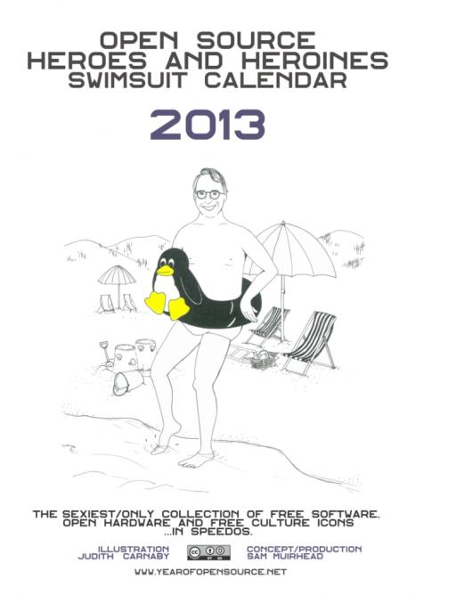

2013-08-18
當所有權的概念如此普遍之際，很難想像只利用開放資源(open source)可以怎麼生活。
在德國，電影製作人Sam Muirhead從2012年8月1日到2013年8月1日展開year of open source計畫，他將把親身體驗的結果以文字和影像在網站上分享，呈現目前開放資源的進展以及未來的發展潛力。
許多人誤解開放資源就是免費的資源，然而事實上，開放資源並不代表就是免費或沒有版權的，只是它強調透過不同於版權或專利的授權方式，讓使用者自由使用、研究、調整、分享、加強。就像是食譜，不會阻止人們根據自己的需要改變後再分享給其他人，也不會介意其他人將改變後的食譜出書賺錢。
開放資源也不等於自由軟體，它可以視為將自由軟體的概念散佈到各領域後造成的結果，包含開放硬體、開放資料、自由文化、開放教育、分工網路等等，甚至可以說這是一種用於各領域的嶄新思考及工作方式—重視互通性、強調嘉惠公眾、將他人視為合作者而非競爭者。
因此，開放資源不只是科技專家、電腦玩家所該關注的，它其實和每個人都有關，Sam Muirhead正是想利用這個計畫展現生活中各領域開放資源的發展狀況，並思考身為一個影片製作人他可以為開放資源做些什麼，讓自己不再只是開放資源文化的旁觀者。

Sam Muirhead / 姓名標示-相同方式分享
贊助計畫的人可以獲得一本Sam Muirhead 繪製的開放資源生活一整年年曆喔! 當然你也可以直接在網站上下載。
這一年來，他的生活多了不少新鮮事，像是透過開放教育資源opentech school學會程式語言、使用sketch chair設計椅子、喝了開放啤酒、利用adafruit織出了一頂帽子、親身體驗Arduino和3D列印機、DIY製作牙膏和肥皂，有些東西(如內衣褲)目前沒有開放的設計藍圖，就到德國的在地共同參與設計的工作坊來自行製作。
另一方面，在這段期間，他只在以創用CC授權釋出影片的公司工作，並將電腦軟體換成Linux、使用自由軟體剪輯影片。他遭遇了一些挑戰，像是使用自由軟體剪輯影片的品質不如商業軟體、很難和他人合作編輯；而且，好電影都強烈倚賴版權對於商業模式的保護，即使有些電影以CC授權分享，通常也有非商業性條款，可混搭的友善影片並不多，加上以CC授詮釋出的新音樂很少，都使他這一年來的娛樂品質不如以往，很懷念進電影院的日子。
再者，他沒有時間、金錢、能力去發展出一個完全以開放資源組裝的電腦，也就只好使用大部分是開放資源的產品。不過，這個計畫的目的本來就不在於挑戰完全使用開放資源過生活，而是想要透過這樣的生活方式分想讓更多人意識到，當有很多東西是公眾且被允許使用的，人們就可以在既有基礎上激盪出更多創意。
Sam Muirhead推薦可以在Github、Thingiverse、Internet Archive發現很多生活中需要的東西，但這些資源都還需要經過妥善的整理；另外，他對於3D列印技術抱有厚望，認為3D列印對製造市場的衝擊必然和當初2D列印對出版市場造成的衝擊不相上下，以往2D列印從居家使用到發展為影印店的模式也將會出現在3D列印上，當未來3D列印的品質、速度、材質多樣性不斷改善後，或許會帶給世界劇烈的改變。
目前，Sam Muirhead只有一些影片和文字記錄這一年來的體驗，等到計畫結束後他打算要寫出一個一致性、有架構的草稿，用有趣的方式說故事、拍成影片，並採創用CC授權，他分享的將不只是如何使用這些產品，還包含他自己的解釋和經驗，也會有一些開放資源提供者的訪談。
參考資料：
http://yearofopensource.net/
http://www.shareable.net/blog/kicking-off-a-year-of-open-source#sthash.BfXK2nFN.dpuf
http://edition.cnn.com/2013/06/04/opinion/sam-muirhead-year-open-source/index.html
http://www.labkultur.tv/en/blog/ouishare-sam-muirhead-living-year-open-source
http://assemblepapers.com.au/2013/01/25/year-of-open-source/